03 Approve Watch the preview and call picture lock.
04 Render 750 frames to a 4K MP4, cut to music.
Sizzle is a skill for AI agents. It turns your product into a 25-second vertical reel, built from its real interface and cut to music.
npx skills add mhfrough/sizzle
Free and open source. Works with Claude Code, Codex, Cursor and any agent that reads skills.
What a run makes
Flick, a file sharing app. 25 seconds, music by BombinSound.Scrawl, a sketchbook in the browser. 25 seconds, music by MMAudio.
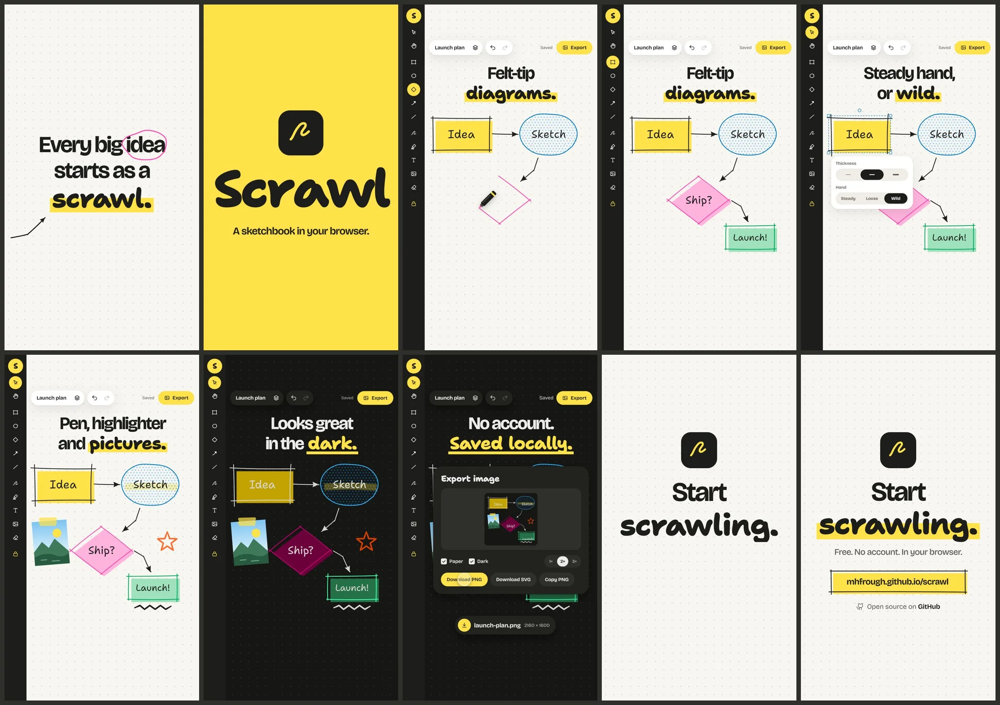
Checked before you see it: ten frames rendered from the HTML, laid out in one sheet.
Flick reel: shot list
25 seconds, 1080 × 1920, rendered at 2160 × 3840
0.0
Hook. “Still emailing files to yourself?” Four workarounds are struck out and fall.
3.0
Reveal. A lime burst: the mark flicks in, the name rises, the tagline lands.
5.3
Discover. Laptop and phone slide in and find each other. No sign-up, no codes, no PIN.
9.9
Flick. A photo lifts off the phone and flies into the laptop. Accept, the bar fills, Save.
14.3
Everyone. One note is typed and shared. Three devices turn lime.
18.2
Trust. Device to device, nothing stored. The cloud is struck out.
20.9
Call to action. “Try Flick.” The address types itself.
Flick reel: final mix
$ music_sync.py flick-bgm.mp3 --cue 2.95
hit 57.02s offset 54.07 pre -14.6 dB body -8.9 dB fits yes
$ reel.py mux promo/reel.json
---- mux summary ----
video : 2160x3840, 750 frames @ 30 fps, H.264 High crf 16
duration : 25.000 s
audio : AAC 48 kHz stereo 192k
loudness : -14.0 LUFS integrated, gain +9.2 dB
peak : -4.03 dBTP (4x oversampled)
The drop at 57.02 seconds into the track lands on the lime burst, 2.95 seconds into the reel.
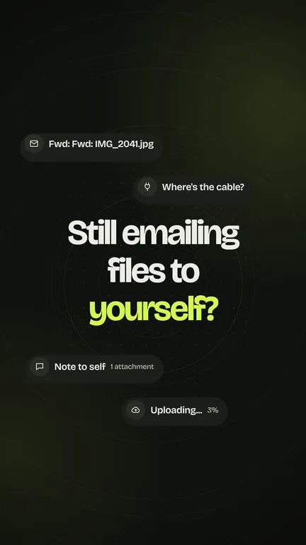
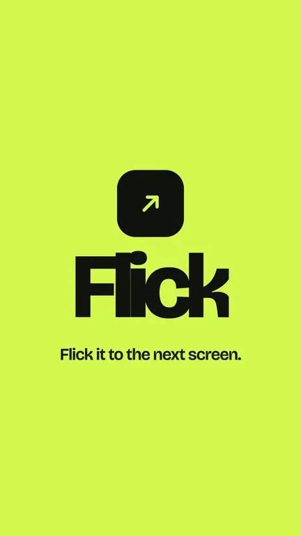
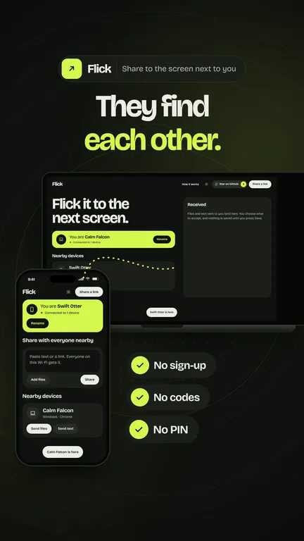
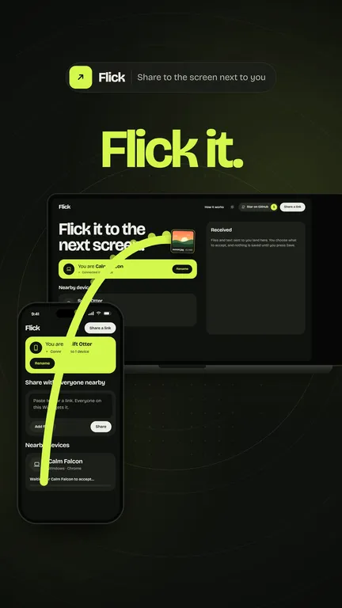
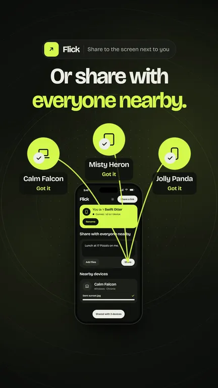
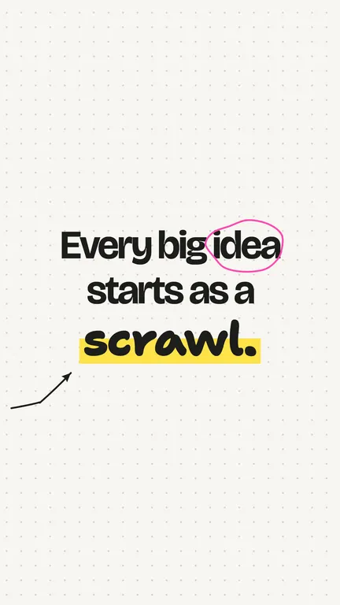
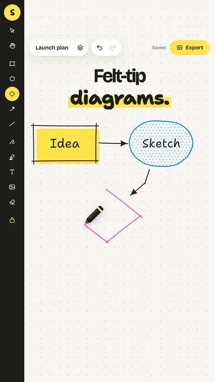
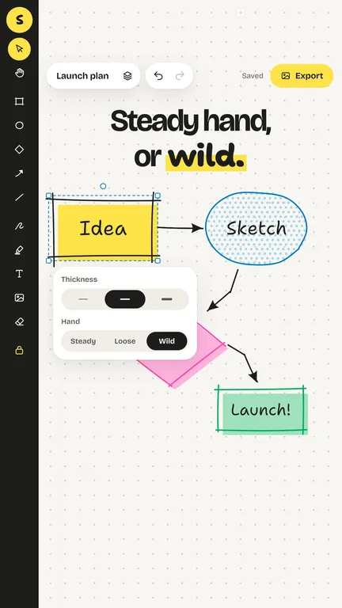
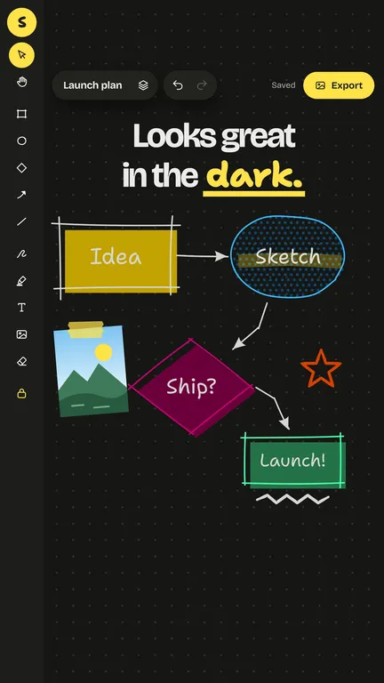
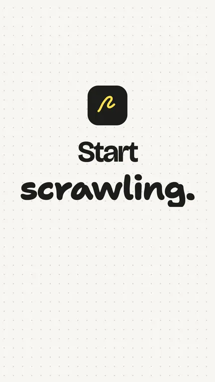
Dailies from the Flick and Scrawl reels. Every frame is rendered from HTML and checked before anyone is asked to approve.
First it reads your code.
README, stylesheet, fonts, icons, your renderer if you have one. Every claim that goes on screen has to be true.
Then it writes and cuts.
A script with a shot list, then an HTML reel built from your real interface, every second on one timeline.
You call picture lock.
Nothing is rendered until you have watched the preview and the key frames and said yes.
Then the mix, then the print.
Free music with its drop on the reveal, then every frame rendered to a 4K MP4.
Cut on cue
Every time in a reel lives in one list of cues. Drag the bar beside the reel, or choose a note, to jump through it.
Rendered one frame at a time
750
Frames in a 25-second reel at 30 per second. A fake clock steps through each one, so every animation and every beat lands where the timeline says. Out comes 2160 × 3840 H.264 with music at −14 LUFS.
Questions
How do I install it?
One line adds it to Claude Code, Codex, Cursor, Gemini CLI and the other agents the skills tool supports:
npx skills add mhfrough/sizzle
Only Claude Code? On macOS or Linux:
curl -fsSL https://mhfrough.github.io/sizzle/install.sh | sh
Any other agent: give it the folder and point it at SKILL.md, or at AGENTS.md for a short version.
Then what do I say?
Ask for it plainly: “make a promo reel for this app”. The agent reads the project, writes the script, builds the reel and stops to show you the preview. Music and the final render only happen after you approve.
What has to be installed?
Node 18 or newer with Playwright and its Chromium, and Python 3.10 or newer with PyAV, NumPy, SciPy, OpenCV and Pillow. No ffmpeg and no editing app: encoding goes through the H.264 encoder that PyAV ships with.
Does it use screenshots of my app?
No. It rebuilds your interface from your own stylesheet, or drives your own renderer, with made-up demo data. Text stays sharp at 4K, everything can move, and no real names or files end up in the video.
Where does the music come from?
Free tracks that allow commercial use, are not registered for Content ID and are not AI-generated. The agent shortlists a few, asks before downloading one, then finds the offset that puts the drop on your reveal.
Can I change it after approving?
Yes. Every time sits in one list of cues, so a retime is one edit and a re-render. A new track or offset only needs the mix step again, not new frames.
What does it cost?
Nothing. Sizzle is MIT licensed, and everything renders on your own machine.